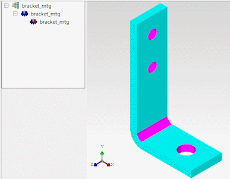
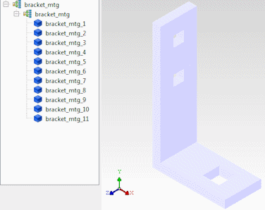
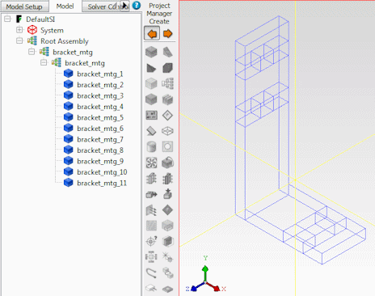

Before
MCAD assemblies can be used in Simcenter Flotherm,
they must be reformatted to represent Simcenter Flotherm objects.
The whole process is a 3-stage operation.
Procedure
- Start the
import of the MCAD file by choosing one of the menu
options.
On import, the external MCAD
Assemblies are translated by MCAD Bridge into ACIS® models, see Figure 1.
Figure 1. Imported MCAD Geometry
- Simplify the MCAD geometry
and then decompose it into Simcenter Flotherm geometry, see Figure 2.
The simplest method is to let
the program automatically simplify and convert the geometry.
Figure 2. Converted Geometry
However,
for complicated models, it is more efficient to simplify the model
by removing the geometry not required for thermal calculation. You
can selectively simplify the model, for example, by removing holes
and humps, leveling near-level features, straightening angled faces,
planing non-planar faces, removing parallel features, flattening
draft angles as well as splitting bodies, before replacing the MCAD objects
with selected Simcenter Flotherm geometry.
- Transfer
the converted assembly to Simcenter Flotherm Project
Manager by choosing .
Figure 3. Imported Geometry